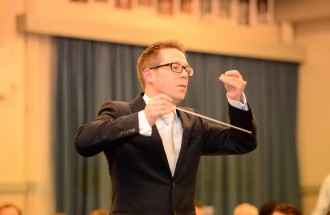

Quadrivium |
|||||||||||
|
|||||||||||
Organisation |
|||||||||||
|
|||||||||||
Activities |
|||||||||||
|
|||||||||||
for Members |
|||||||||||
|
|||||||||||
Contact |
|||||||||||
|
|||||||||||
Ensuite
Quadrivium
Symphonic orchestra Ensuite is an enthusiastic student orchestra which plays a wide range of different music styles: classic, modern, movie and pop music are parts of our concerts. From time to time, Ensuite gives concerts with other music associations. These associations might be part of ESMG Quadrivium, but other orchestras are asked to join as well.
Ensuite was born out of the strings ensemble ‘Ma non troppo’. As a student orchestra, we are always looking for new members! Strings, bassoons, horns, percussionists, everybody is welcome at Ensuite.
Conductor

Starting from November 2014, Bart Partouns is the new conductor of Ensuite.
His musical career started at the winds orchestra of Eijsden, where he played the oboe. After highschool, he entered the conservatorium of Maastricht and learned to become an oboe player from Peter Steijvers.
During his study at the conservatorium, Bart learned to conduct winds orchestras. Currently, he is finishing his master in conducting winds orchestras and he takes private classes for conducting symphony orchestras.
At the moment, Bart is working as an oboe teacher, professional musician and conductor for several orchestras. As a conductor he has won several prices.
Bart aims at reaching a larger public by organizing musical projects that catch the eye. In these musical projects the current style of music should of course not be forgotten.
Occupation
Ensuite is an orchestra with the ambition to grow into a full-sized symphony orchestra. The orchestra exists out of strings, winds and percussionists. This can change during the course of the year, due to the repertoire. The current musicians are all students, complemented by several previous students.
Repertoire
Every year, Ensuite gives 3 concerts, underneath we have listed some of these for you.
In 2010, a project was born with the name ‘Dancing on the G-string’. In this project, music and dance were combined into a marvelous spectacle.
‘Moulin Rouge’, was one of the projects of 2011. During this concert, Ensuite was joined by big band Studentproof in a great concert at the Parktheater. Parktheater is the theatre building of Eindhoven and the 5th largest theatre of the Netherlands.
During the autumn of 2013, gave a small but successful concert at the Studentenkapel in Eindhoven. During this concert, a horn concerto of Strauss was played together with a solo musician. As well Mozart and Elgar were played.
During November 2014 Ensuite performed at GLOW, the largest light festival of the Netherlands. After performing, Wave Field Synthesis, a way of playing back music with of 200 speakers, was used to make visitors feel like they were standing in the orchestra. The wave field synthesis, along with a light artwork, were used during the remainder of the festival.
On the 5th of March 2015, Ensuite played a concert with several Dutch artists at the Effenaar, the pop-stage of Eindhoven, as our lustrum concert. In this concert we performed famous pieces like "dance of the knights" by Sergei Prokofiev, but also more modern pieces with (for example) jazz artist Wouter Hamel. Many view this as the height of our lustrum year. The fall of 2015 we played "Stabat Mater" by Karl Jenkins, where we performed with student choir Vokollage in the Catharinachurch, the grand church in the centre of Eindhoven.
In 2016 we will play at the TU-lustrum festival "Dream& Dare", where we will perform a selection of videogame music!
Rehearsals
Ensuite rehearses weekly from 19.30h to 22.15h on Wednesdays. All rehearsals (with some exceptions) take place at student culture center ‘the Bunker’. Everybody is welcome to join the most fun student symphony orchestra in the region!
In case you have any questions, mail us at or visit us during the rehearsal.
AGENDA
|
Saturday, 23d of April |
TU-lustrum Dream& Dare |